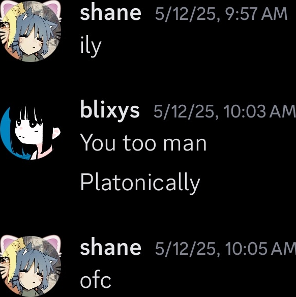

shane
2025.06.01
to Shane,
i miss you. i wish you were here. we used to talk for hours about how people mistreated us, our struggles with mental health, etc., yet no matter what we were always slow to judge and quick to understand each other. now that you’re gone though, i don't know what to do without you. i really don’t.
i remember consoling you one night when you apologized to me over the mere act of knowing you. i told you about how we humans were never meant to be perfect. we were just meant to make the hard times a little more tolerable by being together in the storm. but now that you’re gone, the storm has only gotten colder and more violent without you.
you were always able to soothe the blows of both of our struggles no matter how deep they were, but now you’re gone. i lost a friend as softly as the day ends and i am left with nothing but words, grief, and messages to go through. i won’t be able to see the reels you like anymore, i won’t be able to see what you retweet anymore. it’s all gone. you’ll be missing in the little things, yet somehow i’ll find you in everything else.
i’m sorry, shane. it didn’t have to be this way. i miss you. i miss you so, so much.
<3 🕊️
